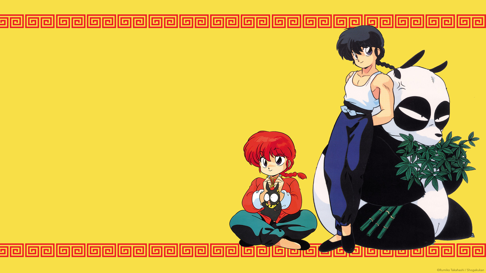
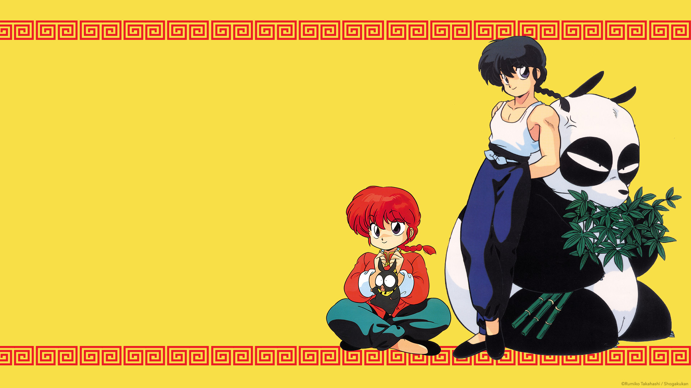
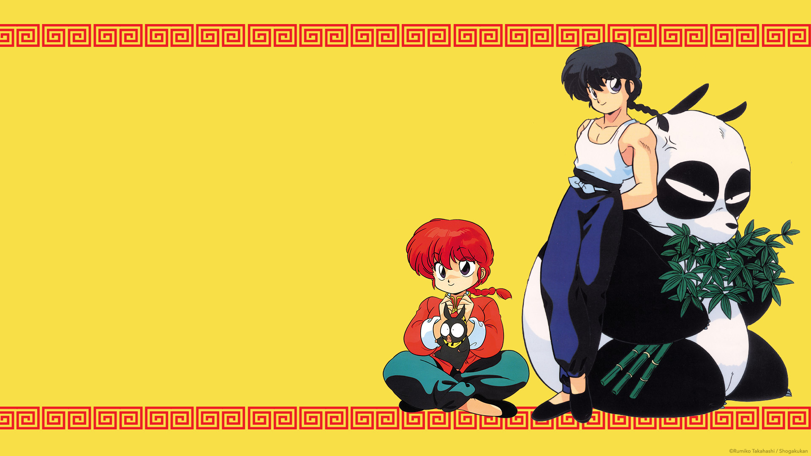

Ranma ½ (らんま½ Ranma Nibun no Ichi?, pronunciado en español como Ranma un-medio, o popularmente llamado Ranma y medio en Hispanoamérica) es una serie de manga escrita e ilustrada por Rumiko Takahashi. Se publicó originalmente en la revista Shūkan Shōnen Sunday de la editorial Shōgakukan desde el 19 de agosto de 1987 hasta el 6 de marzo de 1996, organizándose en 38 volúmenes en formato tankōbon.
La historia gira en torno a Ranma Saotome, un joven de dieciséis años que fue entrenado en las artes marciales desde que era pequeño. Durante una de estas prácticas, cae a un estanque encantado, en los estanques de Jusenkyo, llamado Estanque de la mujer pelirroja ahogada (Estanque de la chica ahogada en Hispanoamérica), que hace que se convierta en mujer cada vez que tiene contacto con agua fría, y para poder regresar a su estado natural tiene que hacer contacto con agua caliente. Durante la serie, Ranma intenta librarse de su maldición, mientras debe lidiar con su compromiso de matrimonio con la adolescente Akane Tendo, el cual fue pactado varios años atrás por los padres de ambos jóvenes.

Mi primer pagina web, hecha con amor por Karla en el bootcamp de tecnolochicas PRO